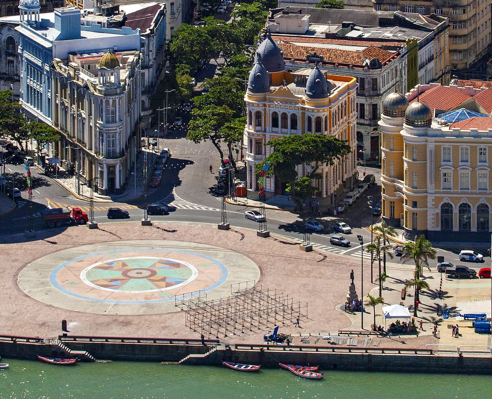
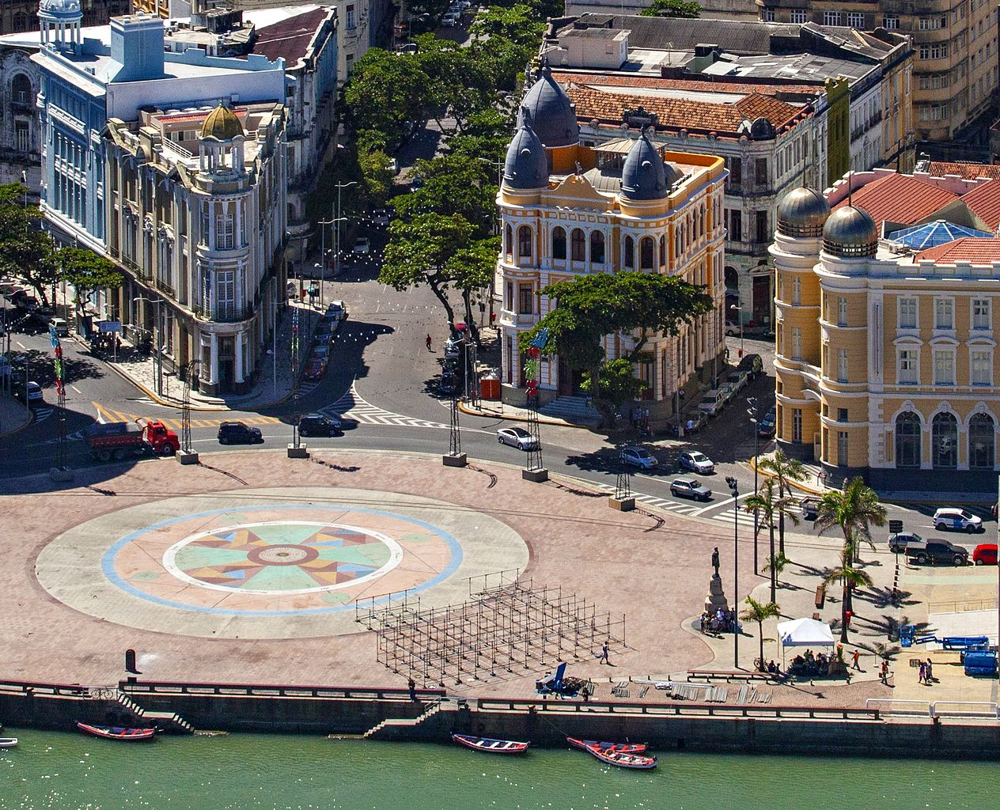

O Marco Zero de Recife
O Marco Zero é um dos pontos turísticos mais famosos de Recife, localizado no coração do centro histórico da cidade. Ele marca o início das medições das distâncias em Pernambuco e é um local cheio de história e cultura.
O monumento é uma grande bússola estrelar em formato de rosa-dos-ventos, feita de mármore branco e preto. Ao redor do Marco Zero, você encontrará uma série de atrações culturais, restaurantes e eventos ao ar livre.
Ao visitar o Marco Zero, você também terá a oportunidade de explorar as belas paisagens urbanas, apreciar a arquitetura colonial e desfrutar da brisa do mar. É um ponto de encontro popular para moradores e turistas, e é frequentemente palco de celebrações e festivais.
 
